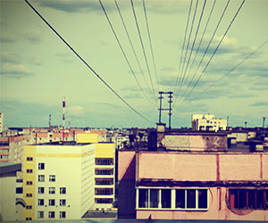

| Кожура | Мякоть | Косточки | Тут вяжет |
 |
Вы спрашивали где ковер? Вот ковер! |
Джо Халматов
Главный бакенбарден и потеряшка нашей редакции. Рисует логотипы, а иногда банки для молока. Любит Миру, кофе и сигареты. Учился в Узбекскоязычной школе, что вызывает некий ахуй у тех, кто с ним знаком, поскольку данный Закаракис владеет великим и могучим не хуже любого Афонасия. Одевался как хипстер еще задолго до того, как это хренотечение влилось в нашу страну. Иногда берет трубки и даже перезванивает.
Плоды:
-

В городе N
07.06.2014 / Григорий Ким / О залупах -
В городе N
07.06.2014 / Григорий Ким / О залупах -
В городе N
07.06.2014 / Григорий Ким / О залупах